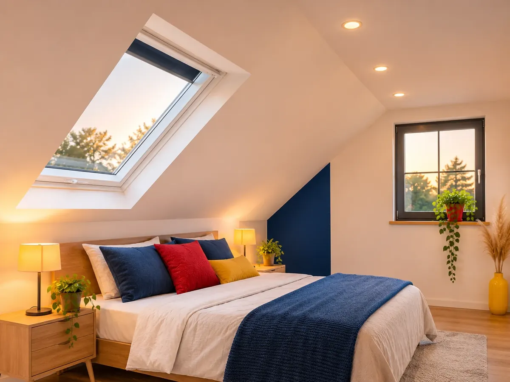
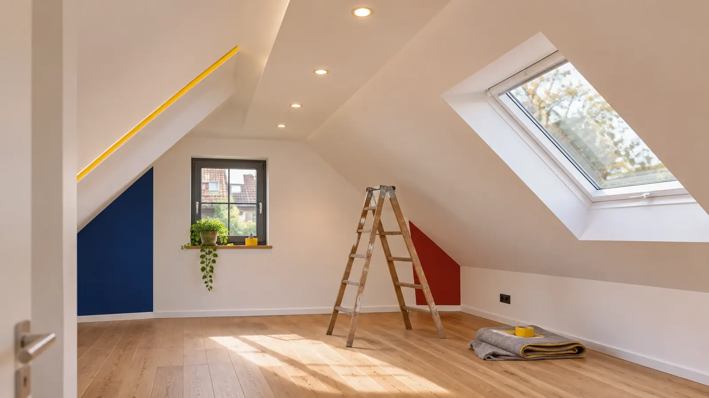
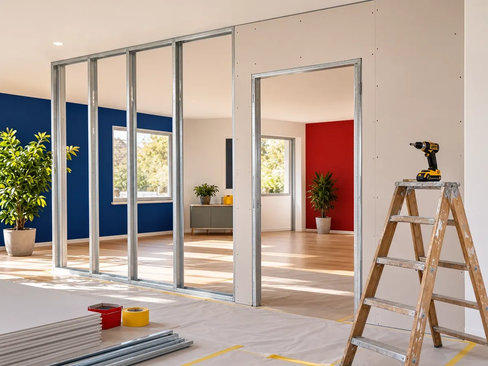
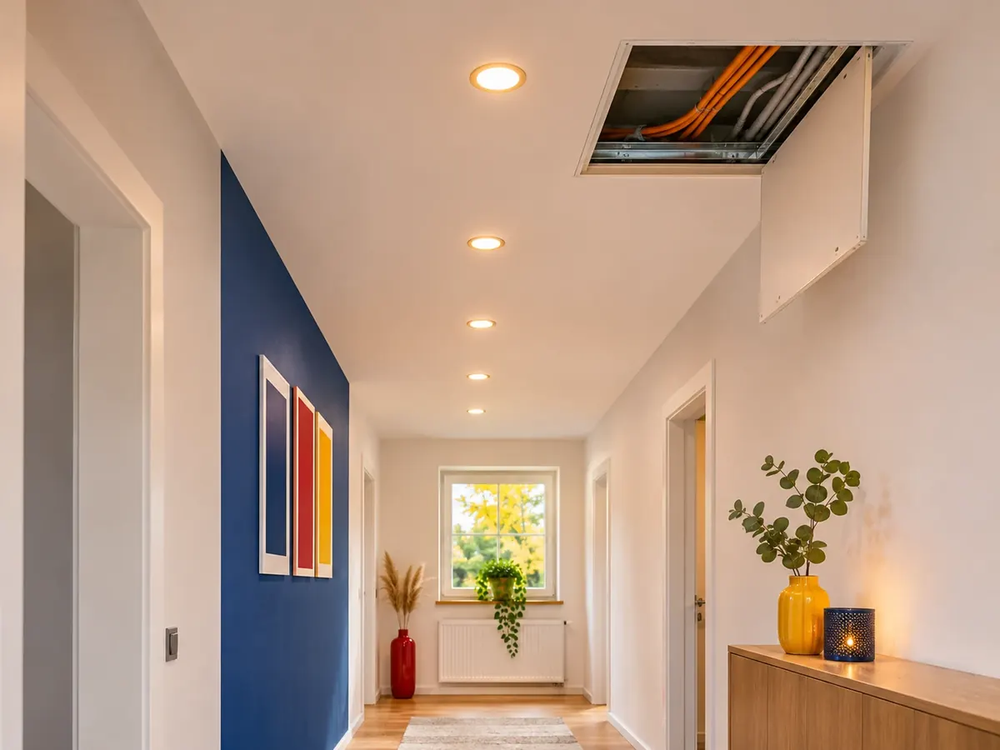
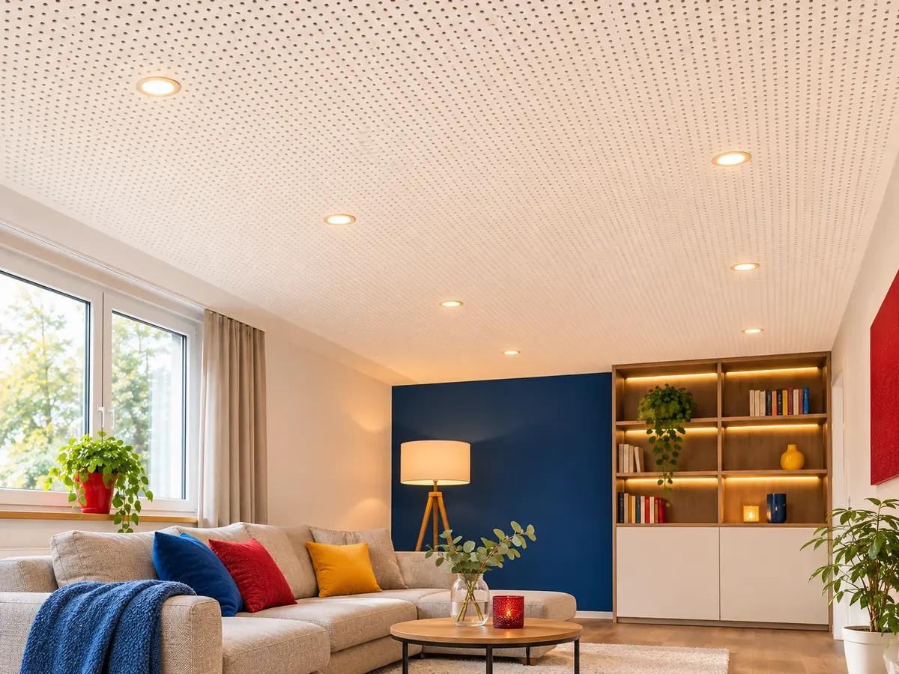
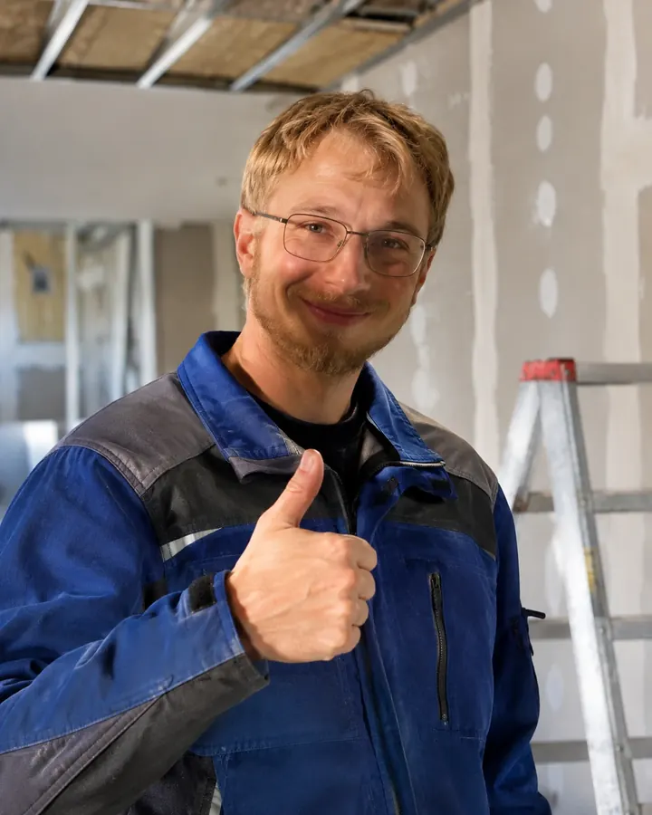

Dachboden wird Schlafzimmer
Schrägen gedämmt und verkleidet, Spots in die Decke, ein Raum, der vorher nur Abstellfläche war.
Wir sind fünf Leute vom Meisterbetrieb Bulau Bau. Wir ziehen Wände ein, bauen Dachböden aus und hängen Decken ab, die Ruhe in den Raum bringen. Sauber, pünktlich und mit einem festen Ansprechpartner.


Aus einem großen Raum werden zwei. Mit Tür, Steckdosen und glatter Fläche, fertig zum Streichen.

Der Dachboden wird zum Zimmer. Gedämmt, verkleidet und so gemütlich, dass man gern oben schläft.

Eine neue Decke unter der alten: Leitungen verschwinden, Spots kommen rein, der Raum wirkt ruhiger.

Weniger Hall im Wohnzimmer, weniger Lärm von oben. Damit man sich wieder in Ruhe unterhalten kann.
Drei Schritte, und Sie wissen immer, woran Sie sind.
Beschreiben Sie kurz übers Formular, was Sie vorhaben. Fotos vom Raum helfen, sind aber kein Muss.
Wir schauen uns den Raum an, messen auf und sagen ehrlich, was geht. Danach bekommen Sie ein schriftliches Angebot.
Zum vereinbarten Termin. Böden werden abgedeckt, und abends räumen wir auf, damit Sie weiter gut wohnen können.

Schrägen gedämmt und verkleidet, Spots in die Decke, ein Raum, der vorher nur Abstellfläche war.

Eine gelochte Akustikdecke schluckt den Hall. Gespräche am Esstisch klingen jetzt wieder normal.

Die neue Decke versteckt alle Leitungen, fünf Einbauspots machen den Flur abends gemütlich.
Bei uns gibt es keine wechselnden Subunternehmer. Sie haben es mit uns fünf zu tun, vom ersten Anruf bis zur letzten Fuge.
Mehr über uns




Erzählen Sie uns kurz davon. Wir melden uns innerhalb von zwei Werktagen und kommen gern zum Anschauen vorbei.